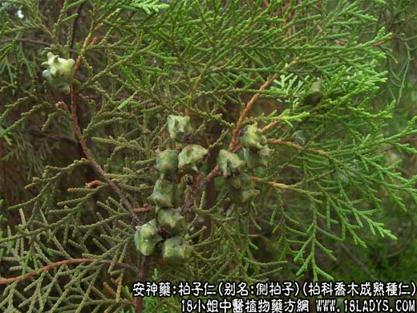

【中药概述】
柏子仁，别名：柏实、柏子、柏仁、侧柏子，为柏科乔木植物侧柏的成熟种仁。甘、平。归心、肾、大肠经。
1．补心养血：用于血不养心的惊悸怔忡、虚烦不眠，思虑过度、心脾受损等，如（<证治准绳>养心汤）。
2．润肠通便：用于阴虚血少的肠燥便秘等，如（<世医得效方>五仁丸）。
3．盗汗自汗：用于阴虚多汗等症，如<柏仁丸>。
【药效鉴别】
柏子仁偏用于心血不足的失眠，为养心安神之常用药。
【药理作用】
所含脂肪油有润肠作用。
【化学成分】
含脂肪油、挥发油、蛋白质、皂甙等。
【用量用法】
10——20g，水煎服，或入丸、散剂。
本文解释权归中药名称大全，本文地址https://www.daquan.com/post/1963.html